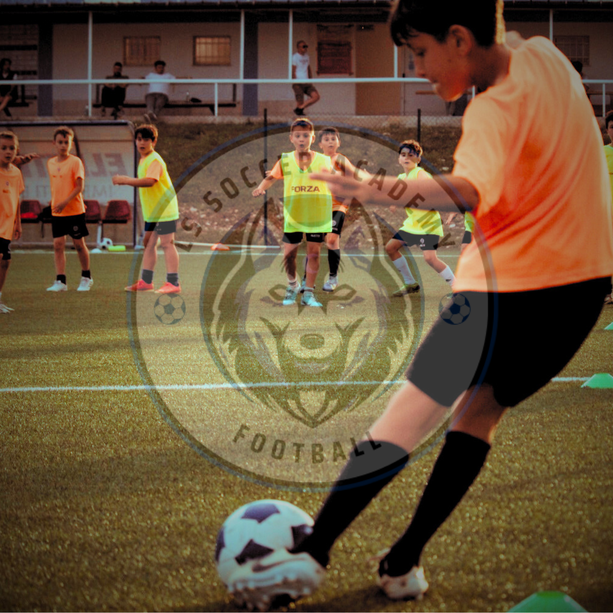
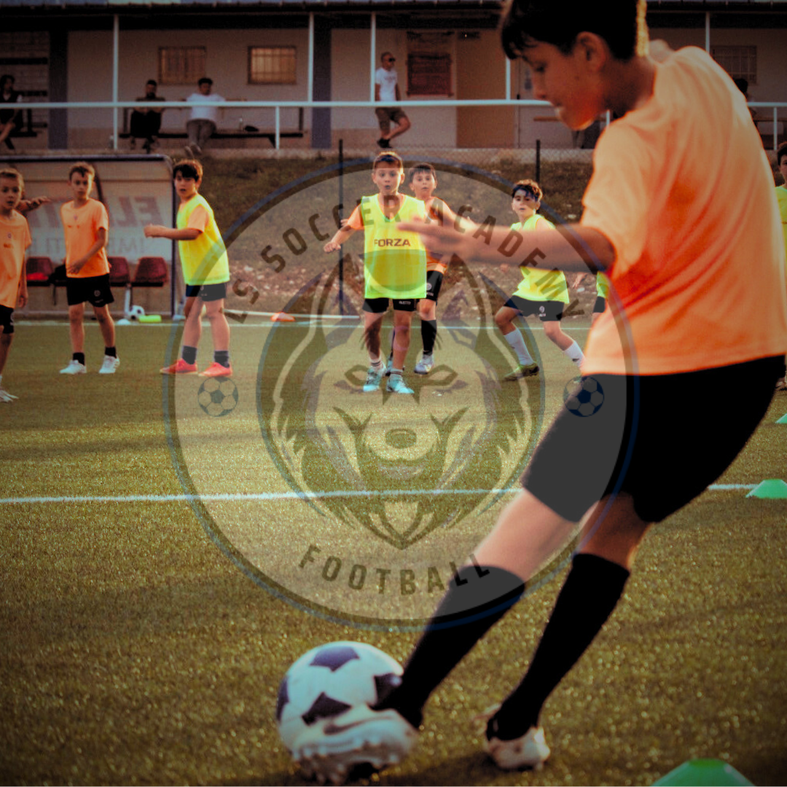

Mi chiamo Luca Sabatucci, nato ad Ascoli Piceno il 18/04/1992. Sono un allenatore di calcio giovanile con anni di esperienza nel campo dell'insegnamento e dello sviluppo delle capacità dei giovani talenti. La mia passione per il calcio non conosce confini e si riflette ogni giorno nel mio lavoro. Credo fermamente che l'educazione sportiva non sia solo un modo per migliorare le abilità atletiche, ma anche un potente strumento per la crescita personale.
Alleno dal 2009 e ho accumulato una vasta esperienza lavorando con diverse squadre e club prestigiosi che mi hanno permesso di avere una formazione completa:
Dal 2022, organizzo un centro estivo di perfezionamento calcistico che ha raggiunto oltre 100 iscritti nel 2024.
Offro allenamenti individuali o a piccoli gruppi, mirati a migliorare le abilità tecniche e tattiche dei giovani calciatori. Le mie sessioni di allenamento sono progettate per essere coinvolgenti e formative, adattandosi alle esigenze specifiche di ogni atleta.
Benvenuti alla LS Soccer Academy, fondata da Luca Sabatucci con l'obiettivo di aiutare giovani appassionati di calcio a raggiungere il loro massimo potenziale. La nostra accademia si distingue per offrire allenamenti ad alta intensità e stimolanti, progettati per favorire la crescita personale e sportiva di ogni ragazzo.
Con una profonda passione per l'insegnamento e il gioco del calcio, ho intrapreso questa missione nel 2024 con grande entusiasmo. Il nostro recente centro estivo ha accolto oltre 100 partecipanti, ottenendo risultati eccellenti grazie al metodo unico della LS Soccer Academy e al contributo fondamentale del nostro qualificato staff di allenatori.
Il nostro team include quattro laureati in scienze motorie con vasta esperienza nel calcio, oltre ad altri istruttori altamente qualificati con competenze e esperienze significative. Guardando al futuro, mi impegno a seguire personalmente atleti desiderosi di migliorare attraverso sessioni private o in mini gruppi, utilizzando sempre metodologie d'allenamento innovative e coinvolgenti.
Unisciti a noi nella tua ricerca di eccellenza nel calcio. Siamo qui per aiutarti a raggiungere i tuoi obiettivi sportivi con passione e dedizione.
Qui puoi trovare gli articoli recenti su di me:


 
